13 Molekylära förkläden
Tänk dig en tunnelbanevagn i rusningstid. Människor står tätt, axel mot axel, och var och en ska ta sig av vid rätt station utan att fastna i någon annan på vägen. Ungefär så ser det ut inuti en cell. Där finns 300–400 milligram protein per milliliter, ungefär lika tjockt som en fruktyoghurt, och därtill fett, DNA och RNA, små molekyler och salter (se även Avsnitt 7.1). Det är inte några enstaka proteiner som simmar runt i ett stort hav, som svanar på en sjö, utan en trängsel där alla hela tiden stöter i alla.
Mitt i den trängseln tillverkar cellen hela tiden nya proteiner. Varje ny proteinkedja ska vecka sig till rätt form, kanske foga ihop sig med rätt partner, och många ska dessutom transporteras till rätt plats i cellen. Hur undviker de att klumpa ihop sig med fel molekyler på vägen? En stor del av svaret är en grupp hjälpproteiner som kallas molekylära chaperoner.
Ordet chaperon kommer från franskan och används på engelska om en person som följer med och vakar över någon. På svenska kallas en sådan person ett förkläde: förr i tiden en äldre dam som följde med en ung flicka på baler och middagar. Förklädets uppgift var att se till att flickan inte inledde några olämpliga bekantskaper innan hon hittade den rätta partnern. De molekylära förklädena gör samma sak för proteinerna.
I det här kapitlet ska vi först se varför proteiner behöver hjälp, och sedan hur de olika förklädena arbetar. Till sist ser vi hur cellen gör sig av med de proteiner som ändå inte blir som de ska.
13.1 Varför proteiner behöver hjälp
Som vi såg i Avsnitt 1.10.3 och Avsnitt 3.1.3 måste en proteinkedja vecka sig till en bestämd tredimensionell form för att fungera. En kedja som inte är veckad, eller som har veckat sig fel, har tre problem:
- Den fungerar inte. Ett enzym som inte har rätt form kan inte sätta fart på sin reaktion.
- Den klumpar lätt ihop sig. De vattenskygga (hydrofoba) delarna, som i ett färdigt protein är gömda i mitten, ligger öppna. De fastnar gärna i motsvarande delar av andra kedjor, så att det bildas aggregat.
- Den bryts lätt ned. Cellen innehåller proteaser, enzymer som klipper sönder proteiner. En utsträckt kedja är ett lätt byte, medan ett tätt veckat protein står emot.
Ett veckat protein är tvärtom funktionellt, stabilt och tåligt mot proteaser. Och kedjan kan i princip hitta sin form på egen hand. Christian Anfinsen visade på 1950- och 60-talen, i försök som gav honom Nobelpriset i kemi 1972, att ett enzym som fått veckla upp sig i provröret kan vecka sig tillbaka av sig självt: informationen om formen finns i ordningen mellan aminosyrorna (Avsnitt 5.8.2). Vi återkommer till försöket i nästa kapitel (Avsnitt 14.1.1).
Anfinsens enzym hölls dessutom ihop av disulfidbryggor, starka bindningar mellan två svavelatomer i aminosyran cystein. Sådana bryggor är något man kan ändra på med kemi, och det används i vardagen (se fördjupningen).
Om kedjan kan hitta sin form själv, varför behövs då hjälp? Anfinsens försök gjordes med ett enda renat protein i en utspädd lösning i ett provrör. I cellen är förutsättningarna helt andra. Människans arvsmassa innehåller omkring 20 000 gener för proteiner, och varje cell tillverkar många tusen olika sorter samtidigt. En ny kedja kommer dessutom ut ur ribosomen bit för bit. Den börjar vecka sig redan medan den tillverkas, men länge är bara en del av kedjan färdig, och den delen kan inte vecka sig klart förrän resten finns. Under tiden ligger vattenskygga partier öppna, mitt i trängseln, och kan lätt fastna i andra proteiner.
En del proteiner ska inte heller vecka sig direkt. I Kapitel 12 såg vi att proteiner som tillverkas i cytosolen och ska in i mitokondrierna eller kloroplasterna måste hållas mer eller mindre oveckade för att kunna trädas genom de smala porerna i organellens membran. Någon måste se till att de inte veckar sig, eller klumpar ihop sig, under tiden.
13.2 Förkläden för molekyler
Vad är då en molekylär chaperon, och vad har alla chaperoner gemensamt? Historien börjar med ett enda protein.
Begreppet molekylär chaperon infördes 1978 av den brittiske biokemisten Ron Laskey i Cambridge. Han studerade proteinet nukleoplasmin, som hjälper histonerna, de proteiner som DNA lindas kring i cellkärnan, att foga ihop sig med DNA utan att klumpa ihop sig.
Liknelsen med förklädet blev populär och gav upphov till många skämt på konferenser. Laskey själv spelade gärna gitarr och sjöng egna sånger om biokemi, bland annat om molekylära chaperoner. De gavs till och med ut på skiva, Selected Songs for Cynical Scientists.
Under 1980-talet visade det sig att det finns många olika proteiner som gör liknande saker, och begreppet fick en bredare betydelse. En vanlig definition i dag är att molekylära chaperoner är en stor grupp proteinfamiljer, som inte behöver vara släkt med varandra, och som stabiliserar oveckade proteiner, vecklar upp dem för transport genom membran eller för nedbrytning, och hjälper dem att vecka sig och foga ihop sig med andra proteiner.
Två egenskaper är gemensamma för nästan alla chaperoner och värda att lägga på minnet:
- De binder och släpper. En chaperon griper tag i en kedja, håller den en stund och släpper den sedan, ofta många gånger om. Den blir aldrig en del av det färdiga proteinet. Det skulle göra hela poängen om intet: förklädet ska inte följa med in i äktenskapet.
- De bestämmer inte formen. Informationen om formen finns i kedjan själv, precis som Anfinsen visade. Chaperonerna ger kedjan en chans att hitta den formen genom att hindra den från att fastna i fel sällskap.
De flesta chaperoner är dessutom ATPaser, enzymer som binder och spjälkar ATP, cellens energivaluta (Kapitel 2). De arbetar långsamt, och energin i ATP används inte för att vecka kedjan, utan för att chaperonen själv ska ändra form: öppna och stänga sitt grepp.
13.3 Värmechockproteiner
Många chaperoner upptäcktes för att cellen tillverkar mer av dem när den blir för varm. Det har gett dem deras namn, och det säger något om vad de är till för.
Den som har kokat ett ägg vet vad som händer med proteiner när de blir för varma: de vecklas upp och klumpar ihop sig. Våra egna proteiner är också känsliga. De flesta tål några graders feber, men blir kroppen mycket varmare än 40 grader börjar allt fler av dem veckla upp sig.
Cellerna har ett försvar. När temperaturen stiger, eller när cellen utsätts för annan stress som giftiga ämnen eller ändrat pH, börjar den tillverka mycket mer av vissa proteiner. Fenomenet upptäcktes på 1960-talet hos bananflugor, och proteinerna kallas därför värmechockproteiner (eng. heat shock proteins), förkortat Hsp. Många av dem visade sig vara chaperoner. Att det blir mer av dem vid stress är logiskt: det är då många proteiner riskerar att veckla upp sig och behöver hjälp. Men de flesta värmechockproteiner finns också i normala celler, där de hjälper nytillverkade proteiner.
Hur vet cellen när den ska tillverka mer? Det sker genom att ett reglerprotein, en värmechockfaktor, aktiveras, tar sig in i cellkärnan och sätter igång avläsningen av generna för värmechockproteinerna. I en cell utan stress hålls värmechockfaktorn overksam av chaperoner, bland andra Hsp70. När många proteiner börjar veckla upp sig behövs chaperonerna där i stället. Värmechockfaktorn släpps då fri och sätter igång tillverkningen av fler chaperoner. Cellen mäter alltså själv hur mycket hjälp som behövs.
Siffran i namnet anger ungefär hur mycket proteinet väger, i kilodalton (Kapitel 2). Ett kilodalton är tusen dalton, och en dalton är ungefär vikten av en väteatom. Hsp70 väger alltså cirka 70 kilodalton och består av drygt 600 aminosyror. Samma proteiner har ofta andra namn i bakterier, där de först studerades i tarmbakterien Escherichia coli. Chaperonerna delas in i några stora familjer (Tabell 13.1).
| Familj | Andra namn och exempel | Huvudsaklig uppgift | Använder ATP |
|---|---|---|---|
| Hsp70 | DnaK; BiP i ER | griper tag i oveckade kedjor, hjälper till vid transport genom membran | ja |
| Hsp60 (chaperoniner) | GroEL; TRiC hos eukaryoter | erbjuder ett skyddat rum där kedjan kan vecka sig | ja |
| Hsp90 | finns i nästan alla celler | slutlig mognad av vissa proteiner, t.ex. hormonreceptorer | ja |
| Hsp100 | Clp-proteiner | vecklar upp proteiner och löser upp klumpar, ofta inför nedbrytning | ja |
| Små värmechockproteiner | α-kristallin i ögats lins | håller fast skadade proteiner så att de inte klumpar ihop sig | nej |
Familjerna samarbetar och bildar tillsammans ett nätverk för cellens kvalitetskontroll av proteiner (Figur 13.1). Vi går igenom dem en i taget.
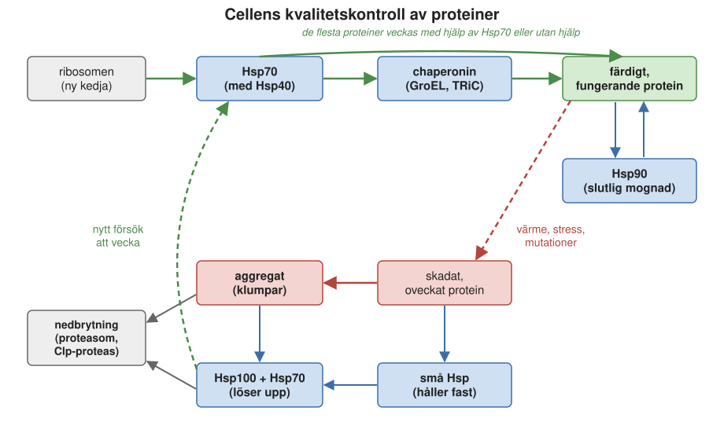
13.4 Hsp70: griper och släpper
Hsp70 är den mest allsidiga chaperonen. Den finns hos bakterier (där den kallas DnaK) och i nästan alla delar av den eukaryota cellen: i cytosolen, i mitokondrierna, i kloroplasterna och i endoplasmatiska nätverket (ER). Dess uppgifter är många:
- den binder till vattenskygga partier hos oveckade kedjor,
- den hindrar proteiner från att klumpa ihop sig, både direkt efter tillverkningen och efter stress,
- den hindrar kedjor från att vecka sig för tidigt, när de ska transporteras in i en organell,
- den hjälper proteiner att foga ihop sig med andra proteiner, och
- den hjälper till vid transporten genom membran.
Hsp70 består av två delar (Figur 13.2). Den ena binder ATP och styr arbetet. Den andra har en skåra där en bit av en proteinkedja kan ligga, och ovanför skåran sitter ett rörligt lock, en alfahelix. När Hsp70 har ATP bundet står locket öppet. Kedjor kan då lätt glida in i skåran, men de släpper också lätt. När ATP spjälkas till ADP ändrar hela proteinet form, och locket fälls ned över skåran. Nu sitter kedjan fast, som en pinne i en knuten hand.
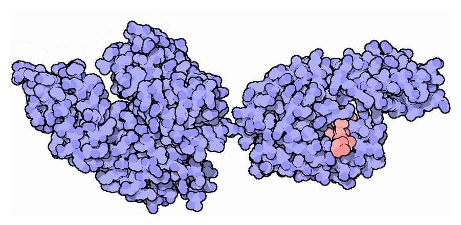
Ett arbetslag i tre delar
Hsp70 arbetar inte ensam utan med två medhjälpare, så kallade kochaperoner (eng. co-chaperones) (Figur 13.3). Den första, Hsp40 (i bakterier DnaJ), är mindre nogräknad med vad den binder. Den hittar en oveckad kedja och lämnar över den till Hsp70, som har ATP bundet och alltså ett öppet grepp. Hsp40 får sedan Hsp70 att spjälka sitt ATP, så att locket stängs och kedjan sitter fast. Den andra medhjälparen, i bakterier kallad GrpE, byter ut ADP mot ett nytt ATP. Då öppnas locket igen och kedjan släpps.
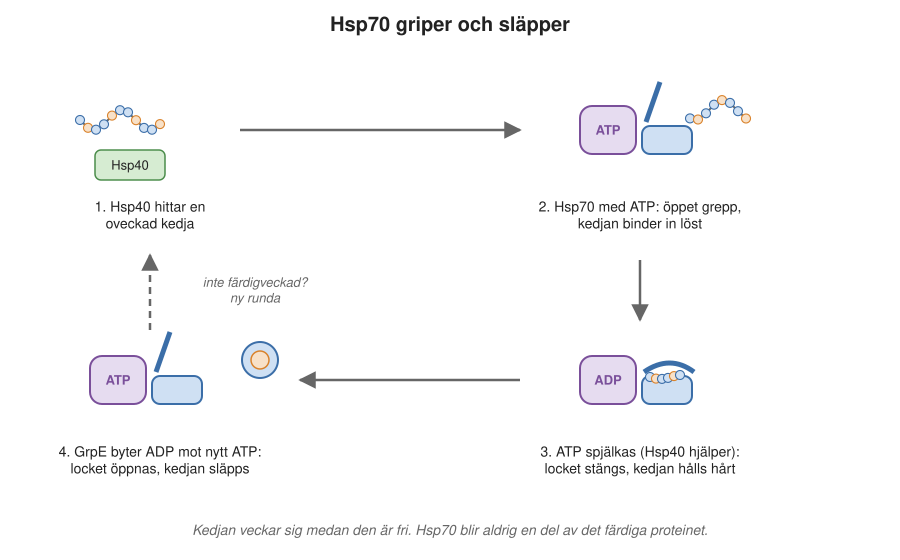
När kedjan släpps kan den vecka sig en bit på egen hand. Är den inte klar kan den fångas in igen, och efter några sådana rundor är den ofta helt veckad. Varje gång Hsp70 håller i kedjan skyddas de vattenskygga partierna från att fastna i andra proteiner. Kedjor som inte klarar sig med Hsp70:s hjälp kan lämnas vidare till ett chaperonin, som vi ska se strax.
Var griper Hsp70 tag?
Vi har sagt att Hsp70 binder till vattenskygga partier. Men kan den gripa tag var som helst på en proteinkedja? Det undersökte en tysk forskargrupp i ett elegant försök som publicerades 1997. De delade upp kända proteiner i korta, överlappande bitar: en bit på 13 aminosyror från början av kedjan, sedan en bit som började tre aminosyror längre in, och så vidare längs hela kedjan. Bitarna tillverkades kemiskt och fästes som prickar på ett membran. Membranet badades sedan i en lösning med Hsp70 (i det här fallet bakteriens DnaK). Efter tvättning såg man med hjälp av antikroppar mot Hsp70 vilka prickar Hsp70 hade fastnat på. Så undersökte man 37 olika proteiner, sammanlagt omkring 4 500 bitar (Figur 13.4).
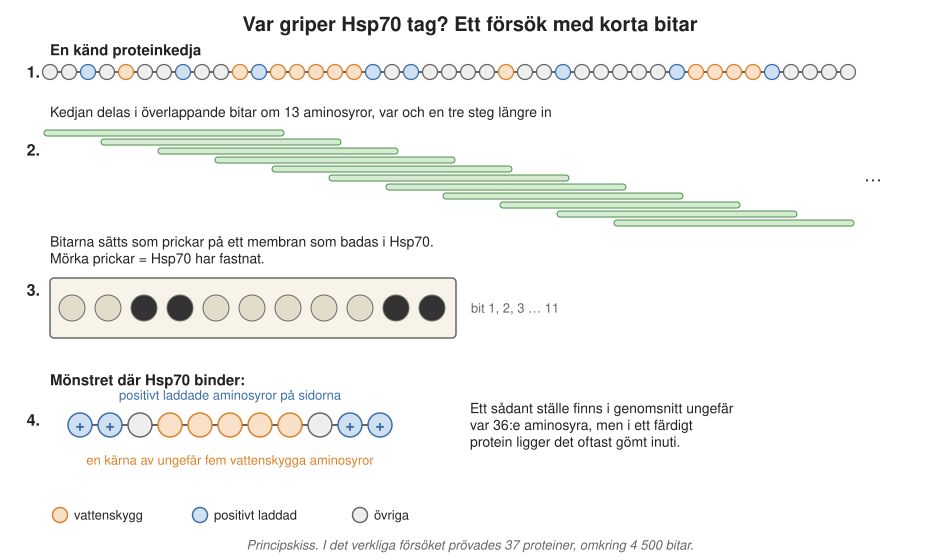
Resultatet var tydligt. Hsp70 binder bara till vissa bitar, och de har ett gemensamt mönster: en kärna av ungefär fem vattenskygga aminosyror, som leucin, isoleucin, valin och fenylalanin, omgiven av positivt laddade aminosyror som arginin och lysin. Ett sådant bindningsställe förekommer i genomsnitt ungefär var 36:e aminosyra. Nästan alla proteiner har alltså flera ställen där Hsp70 kan gripa tag. I ett färdigt protein är de vattenskygga partierna gömda inuti, och därför binder Hsp70 framför allt till kedjor som är oveckade eller nytillverkade. Det är precis de som behöver hjälp.
Hsp70 drar in proteiner i mitokondrierna
Hsp70 har också en särskild uppgift när proteiner ska in i mitokondrierna, och den finns därför även på insidan av dem. Ett protein som ska in i mitokondrien trär sig oveckat genom porer i de två membranen (Avsnitt 12.5), och på insidan tar mitokondriens Hsp70 emot kedjan och ser till att den bara kan röra sig inåt. Hur det går till beskrivs i Avsnitt 12.5.3.
13.5 Chaperoniner: ett rum att vecka sig i
Nästa familj, Hsp60, är helt annorlunda. I stället för att gripa tag i korta bitar av en kedja erbjuder den kedjan ett skyddat rum att vecka sig i. Familjens medlemmar kallas chaperoniner. I bakterier heter den viktigaste GroEL, och den arbetar tillsammans med ett mindre protein, GroES (Hsp10). Motsvarigheter finns i mitokondrier och kloroplaster, som en gång var bakterier. I eukaryoternas cytosol finns i stället ett besläktat chaperonin, TRiC, som är byggt på liknande sätt men skiljer sig i detaljerna. Två av TRiC:s viktigaste klienter är aktin och tubulin, byggstenarna i cellskelettets trådar och rör (Avsnitt 7.5), som inte kan vecka sig rätt utan TRiC.
När chaperonerna var nya trodde många att de hjälpte proteiner genom att binda dem på sin yta. Den första strukturen av GroEL, som bestämdes i mitten av 1990-talet, visade något helt annat. GroEL består av fjorton likadana proteinkedjor, ordnade i två ringar med sju i varje, staplade på varandra (Figur 13.5). Varje ring omsluter ett stort hålrum, tillräckligt för ett medelstort protein. GroES bildar en ring av sju mindre kedjor som passar som ett lock över den ena öppningen.
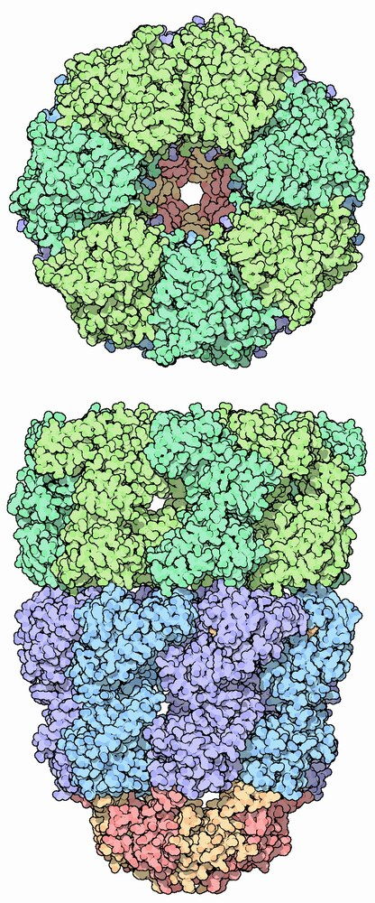
Ett andningsrum för proteiner
GroEL arbetar i en cykel (Figur 13.6). Kanterna kring öppningen i en ring är vattenskygga, och där fastnar en oveckad kedja med sina vattenskygga partier. Sedan binder sju ATP-molekyler, en till varje kedja i ringen, och locket GroES sätts på. Då händer något avgörande: väggarna i ringen vrider sig och ändrar form. De vattenskygga ytorna där kedjan satt vrids bort, och insidan av hålrummet blir i stället vattenälskande. Kedjan släpper från väggen och hamnar fri i ett skyddat rum, där den kan vecka sig ostört. Den har ingen granne att klumpa ihop sig med. Och eftersom väggarna nu är vattenälskande lönar det sig för kedjan att gömma sina vattenskygga delar inuti sig själv.
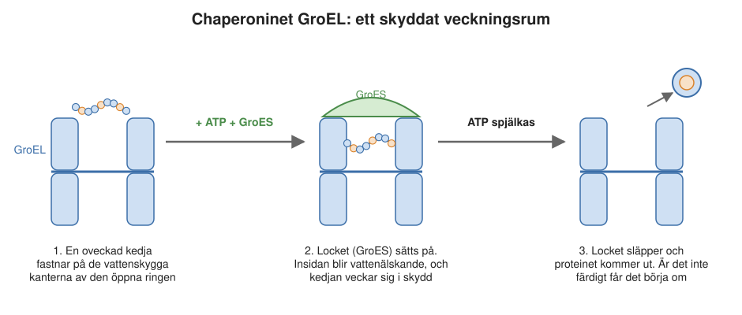
Efter några sekunder har ATP spjälkats. När nya ATP-molekyler och en ny kedja binder till den andra ringen lossnar locket, och proteinet kommer ut. Är det färdigveckat kan det börja arbeta. Är det inte färdigt binder det snabbt in igen, och cykeln upprepas, ibland många gånger. De två ringarna turas om, ungefär som två cylindrar i en motor.
Man kan säga att GroEL andas: den öppnar och stänger sig, och för varje andetag får kedjan en ny chans. Formförändringarna är mycket stora och har kunnat följas i detalj med kryoelektronmikroskopi (Kapitel 6).
13.6 Hsp90: en klämma för klientproteiner
Hsp90 är ett av de vanligaste proteinerna i cellen: omkring en procent av alla proteiner i cytosolen. Den har förändrats mycket lite under evolutionen och finns i allt från bakterier till människor, i eukaryoter både i cytosolen, i mitokondrierna och i ER. Hsp90 hindrar proteiner från att klumpa ihop sig och från att veckla upp sig, men dess mest speciella uppgift är att hjälpa vissa proteiner med den allra sista mognaden. Dessa proteiner, som redan är nästan färdigveckade, brukar kallas Hsp90:s klientproteiner.
Hsp90 består av två likadana kedjor, en dimer. Varje kedja har tre delar. Den yttersta delen binder och spjälkar ATP, mittdelen binder klientproteinet och olika medhjälpare, och den tredje delen håller ihop de två kedjorna. Tillsammans bildar de en sorts klämma, formad som ett V (Figur 13.7). Utan ATP står klämman öppen. När ATP binder sluts den, och klientproteinet hålls i hålrummet mellan de två armarna, där det kan ändra form. När ATP spjälkas öppnas klämman och klienten släpps i sin nya form. Hsp90 arbetar sällan ensam. Den bildar stora komplex med en lång rad medhjälpare, och ofta får den sina klienter överlämnade från Hsp70 och Hsp40.
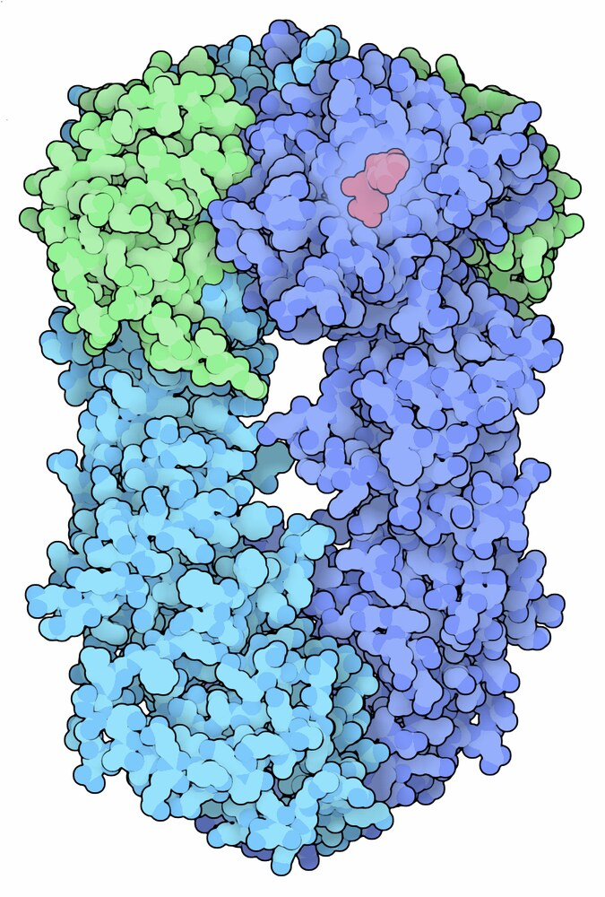
Vilka är då klientproteinerna? Ett välstuderat exempel är receptorerna för steroidhormoner, som könshormonerna och kortisol. Steroidhormonerna bildas i binjurebarken och könskörtlarna och kan, eftersom de är fettlösliga, ta sig rakt genom cellmembranet. Inne i cellen binder de till sin receptor, som sedan tar sig in i cellkärnan och sätter igång avläsningen av vissa gener. Men receptorn kan bara ta emot hormonet om den har rätt form, och den formen får den med hjälp av Hsp90. Andra viktiga klienter är många kinaser, enzymer som styr cellens signaler om tillväxt och delning (om signaler i cellen, se Avsnitt 2.11.2).
Ett mål för cancerläkemedel
Just därför har Hsp90 blivit intressant i cancerforskningen. Cancerceller har ofta muterade eller överaktiva kinaser och andra proteiner som driver den okontrollerade celldelningen. Sådana proteiner är ofta instabila och behöver extra mycket hjälp av Hsp90 för att fungera. Cancerceller tillverkar dessutom ofta mer Hsp90 än vanliga celler. Om man blockerar Hsp90 drabbas därför cancercellerna hårdare än friska celler.
De första ämnen man fann som hämmar Hsp90 var naturliga ämnen från mikroorganismer: geldanamycin, från en jordbakterie av släktet Streptomyces, och radicicol, från en svamp. Båda binder i den ficka där Hsp90 normalt binder ATP. Utan ATP kan klämman inte slutas, och klientproteinerna kan inte mogna. Andra hämmare angriper den del som håller ihop de två kedjorna. Med utgångspunkt från de naturliga ämnena har man tillverkat en rad nya varianter, och flera har prövats som läkemedel mot cancer. Ett av dem, pimitespib, godkändes 2022 i Japan mot en ovanlig form av tumör i mag-tarmkanalen (GIST).
13.7 Hsp100: veckla upp eller tugga sönder
Ibland går det ändå fel, och proteiner klumpar ihop sig. Då kommer familjen Hsp100 in, i bakterier kallad Clp-proteiner. De är ATPaser av en stor grupp som kallas AAA+-proteiner (av eng. ATPases associated with various cellular activities). Sex kedjor bildar en ring med en smal kanal i mitten. Med kraft från ATP griper ringen tag i en proteinkedja och drar den genom kanalen. Då vecklas proteinet upp, och en kedja som satt fast i en klump lirkas loss.
Vad som händer sedan beror på vilken partner ringen har. Några av ringarna, som ClpA och ClpX, sätter sig på ett proteas, ClpP, som består av två ringar med sju kedjor vardera och har sina klippande delar gömda inuti. Den oveckade kedjan matas då rakt in i proteaset och tuggas sönder till korta bitar. En annan ring, ClpB, saknar proteas. Den samarbetar i stället med Hsp70 för att lösa upp klumpar, så att kedjorna kan få en ny chans att vecka sig rätt (Figur 13.8).
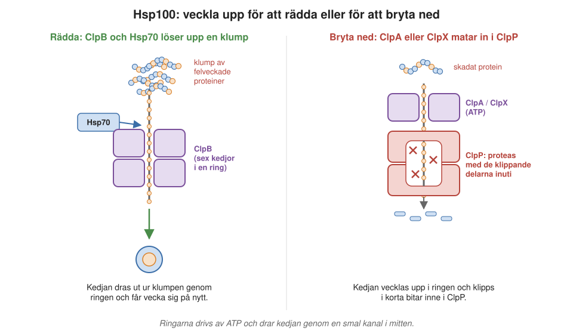
Samma ring kan också först försöka rädda ett protein, och döma ut det bara om räddningen misslyckas. Ett välstuderat exempel är bakterieproteinet RepA, som bildar inaktiva par. ClpA kan med hjälp av ATP dra isär paren, så att RepA blir aktivt igen. Lyckas det inte binder ClpA till proteaset ClpP, och RepA bryts ned.
Hsp100-proteinerna är alltså cellens kvalitetskontrollanter. De kan rädda ett protein genom att veckla upp det, eller döma ut det och se till att det bryts ned. Ofta är det bättre för cellen att bryta ned ett felveckat protein och tillverka ett nytt än att låta det ligga kvar och bilda klumpar.
13.8 Små värmechockproteiner
Den sista familjen är de små värmechockproteinerna (eng. small heat shock proteins). De skiljer sig från de andra chaperonerna genom att de inte använder ATP. De kan alltså inte aktivt vecka eller veckla upp något. I stället fungerar de som en sorts uppsamlingsplats för proteiner som håller på att skadas.
De små värmechockproteinerna är små var för sig, men de sätter sig ihop till stora, ihåliga klot, ofta av 24 kedjor, och i vissa organismer till ännu större strukturer. När cellen utsätts för stress, som värme eller skadliga syreföreningar, öppnas kloten upp och exponerar klibbiga ytor. Proteiner som håller på att veckla upp sig fastnar där i stället för att klumpa ihop sig med varandra. De hålls kvar i ett stabilt komplex tills andra chaperoner, som Hsp70 och Hsp100, kan ta hand om dem och antingen vecka dem rätt eller skicka dem till nedbrytning.
Den mest kända medlemmen är α-kristallin (alfa-kristallin) i ögats lins. Linsen är speciell: dess celler har förlorat sin cellkärna och kan inte tillverka nya proteiner, och linsproteinerna måste därför hålla hela livet. Linsen måste dessutom vara helt genomskinlig, vilket kräver att proteinerna är jämnt lösta. α-kristallin hjälper till att hindra linsproteinerna från att klumpa ihop sig. När det inte längre räcker till, som ofta på äldre dagar, bildas klumpar som sprider ljuset, och linsen grumlas. Det är grå starr (katarakt) (Figur 13.9).
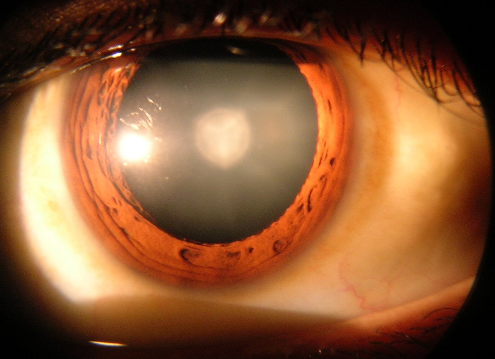
Grå starr är ett exempel på vad som händer när skyddet sviker. Om varken chaperonerna eller nedbrytningen räcker till kan proteinerna bilda klumpar som skadar cellen. Det ligger bakom en lång rad sjukdomar, från grå starr till typ 2-diabetes och sjukdomar i hjärnan som Alzheimers, Parkinsons och ALS. De beskrivs närmare i Kapitel 15, där vi också ser hur cellernas försvar mot felveckning försämras med åldern.
13.9 Proteasomen: cellens återvinningsstation
Vi har flera gånger sett att proteiner som inte går att rädda skickas till nedbrytning. Det är den andra halvan av cellens kvalitetskontroll. Alla proteiner ska inte leva för evigt. Felveckade och skadade proteiner måste bort, och många fullt fungerande proteiner ska bara finnas en kort tid, till exempel de som styr cellens delning. Varje dag tillverkar och bryter en vuxen människa ned flera hundra gram protein. Aminosyrorna återanvänds till nya proteiner.
I eukaryota celler sköts det mesta av nedbrytningen i cytosolen och cellkärnan av en stor proteinmaskin, proteasomen (Figur 13.10). Dess kärna är en cylinder av fyra ringar med sju kedjor i varje, alltså 28 kedjor. Inuti cylindern sitter de klippande delarna, väl gömda så att de inte kan angripa cellens övriga proteiner. I båda ändarna kan ett lock sättas på, uppbyggt av ett tjugotal proteiner. Locket känner igen de proteiner som ska brytas ned, och dess ATPaser vecklar upp dem och matar in dem i cylindern, på samma sätt som Hsp100-ringarna gör. Ut kommer korta bitar av några få till drygt tjugo aminosyror.
Kärnan brukar kallas 20S och locket 19S, och hela maskinen 26S-proteasomen. S står för svedberg, en enhet för hur snabbt en partikel sjunker när den centrifugeras, uppkallad efter den svenske kemisten The Svedberg. Värdet beror både på partikelns storlek och dess form, och därför går det inte att lägga ihop: 20 och 19 blir här 26.
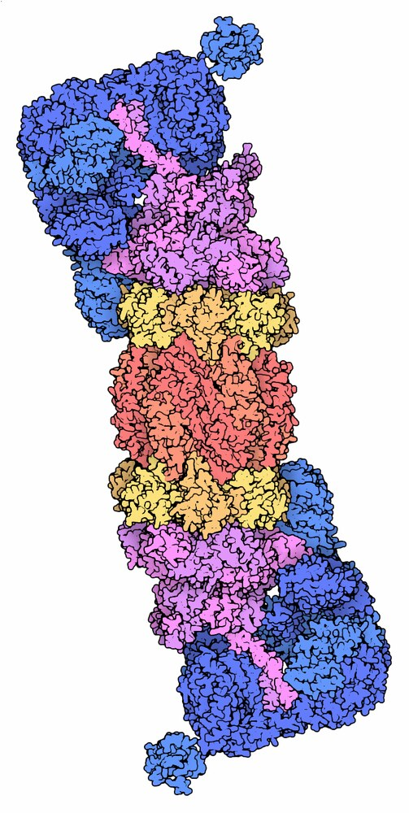
Ubikvitin: dödskyssen
Hur vet proteasomen vilka proteiner den ska bryta ned? De märks ut i förväg med ett litet protein på 76 aminosyror, ubikvitin. Namnet kommer av latinets ubique, “överallt”, eftersom proteinet finns i alla eukaryota celler. Det har förändrats mycket lite under evolutionen: det är konserverat. Det är ett tecken på att proteinet är mycket viktigt, eftersom nästan varje förändring har varit skadlig och sorterats bort. Ubikvitin finns däremot inte hos bakterier, som bryter ned sina proteiner med Clp-proteaser och liknande maskiner.
Märkningen sker i tre steg, av tre sorters enzymer (Figur 13.11):
- Ett E1-enzym aktiverar ubikvitin. Det kräver energi i form av ATP.
- Ubikvitinet förs över till ett E2-enzym.
- Ett E3-enzym känner igen det protein som ska brytas ned och ser till att E2 fäster ubikvitinet vid det. Bindningen sker mellan ubikvitinets sista aminosyra och aminosyran lysin i målproteinet.
Steget upprepas, så att det bildas en kedja av ubikvitin på målproteinet. Kedjan är en signal som proteasomens lock känner igen. Den brukar kallas dödskyssen (eng. kiss of death): ett protein som har fått en ubikvitinkedja är dömt. I proteasomen lossnar ubikvitinet, så att det kan användas igen, och proteinet tuggas sönder.
Vem bestämmer då vilka proteiner som ska märkas? Det finns bara några få E1-enzymer men många hundra olika E3-enzymer hos människan. Det är E3 som står för urvalet, och därför kan nedbrytningen styras mycket noga.
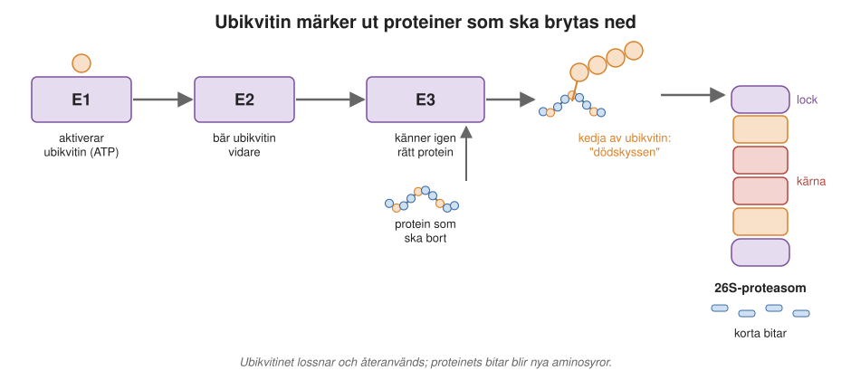
Upptäckten av hur ubikvitin styr nedbrytningen av proteiner belönades med Nobelpriset i kemi 2004. Det delades av Aaron Ciechanover och Avram Hershko från Israel och Irwin Rose från USA, som gjorde de avgörande försöken tillsammans kring 1980.
När nedbrytningen inte fungerar
Eftersom proteasomen styr hur länge många viktiga proteiner finns i cellen, får det allvarliga följder när den inte fungerar som den ska:
- Celldelningen. Cellens delning styrs av proteiner som heter cykliner, som byggs upp och bryts ned i en bestämd takt. Fel i nedbrytningen kan ge felaktig fördelning av kromosomerna mellan dottercellerna.
- Cancer. Proteinet p53, som brukar kallas “genomets väktare”, stoppar celler med skadat DNA från att dela sig. Mängden p53 regleras av proteasomen. Bryts p53 ned för snabbt förlorar cellen en viktig broms.
- Cystisk fibros. Sjukdomen beror på mutationer i en kanal för kloridjoner i cellmembranet. Vid den vanligaste mutationen kan kanalen i princip fungera, men den veckar sig långsammare än normalt. Cellens kvalitetskontroll i ER underkänner den, och den skickas till proteasomen och bryts ned innan den når membranet. Sedan några år finns läkemedel, så kallade korrektorer, som hjälper den muterade kanalen att vecka sig så att fler exemplar når cellmembranet. För många patienter har de förbättrat livet avsevärt.
- Läkemedel. Ett läkemedel som hämmar proteasomen, bortezomib (Velcade), används mot blodcancersjukdomen multipelt myelom. Cancercellerna i den sjukdomen tillverkar enorma mängder antikroppsprotein och är därför särskilt beroende av att kunna göra sig av med felveckade proteiner.
Proteasomen och immunförsvaret
Proteasomen har också en viktig roll i immunförsvaret: den hjälper cellen att visa att den är infekterad. När ett virus (eller vissa bakterier) har tagit sig in i en cell tillverkar cellen virusproteiner. Proteasomen bryter då ned en del av dem, precis som cellens egna proteiner. Några av de korta bitarna förs in i ER, där chaperoner, bland andra ER:s Hsp70 (BiP), hjälper till att fästa dem vid särskilda proteiner som kallas MHC (eng. major histocompatibility complex).
MHC-proteinerna bär bitarna ut till cellens yta och visar upp dem, som en flagga. Immunförsvarets mördarceller (en sorts T-celler) patrullerar kroppen och känner igen bitar som inte hör hemma där. De dödar den infekterade cellen innan viruset hinner föröka sig vidare (Figur 13.12).
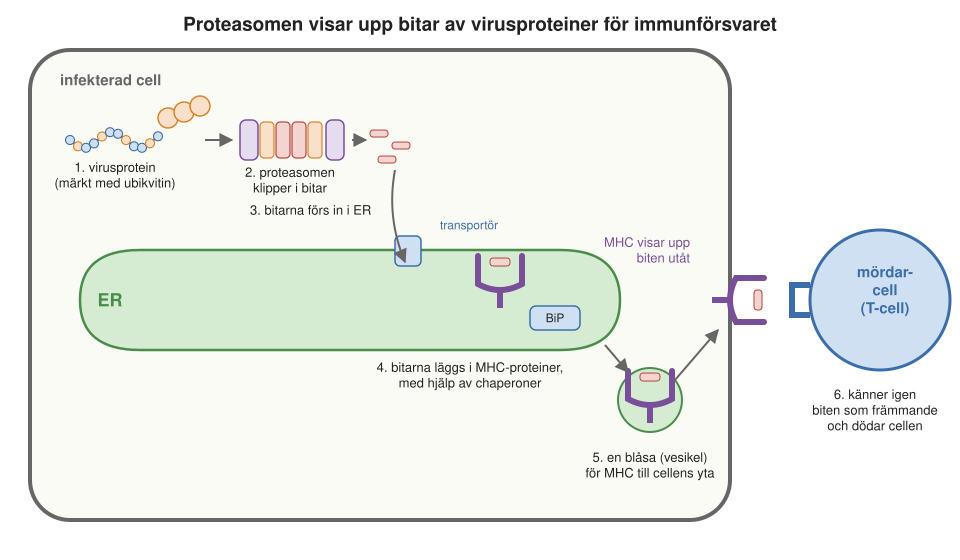
13.10 Proteinernas livshistoria
Tillsammans med Kapitel 12 ger det här kapitlet en bild av ett proteins hela liv i cellen. Kedjan tillverkas i ribosomen och tas om hand redan när den kommer ut. Hsp70 skyddar dess vattenskygga partier, och vissa kedjor får vecka sig i GroEL:s eller TRiC:s skyddade rum. Proteiner som ska till en organell hålls oveckade tills de har trätts genom membranet, och Hsp70 på insidan hjälper till att dra in dem. Hsp90 ger vissa proteiner sin slutliga form. Om proteinet senare skadas av värme eller stress fångas det upp av små värmechockproteiner och får en ny chans med hjälp av Hsp70 och Hsp100. Och när det har gjort sitt, eller inte går att rädda, märks det med ubikvitin och bryts ned i proteasomen. Aminosyrorna används sedan till nya proteiner.
Allt det här sker samtidigt, i trängsel och i miljontals exemplar, i var och en av kroppens ungefär 37 000 miljarder celler.
13.11 Sammanfattning
- Cellen är mycket tätt packad med proteiner. Oveckade kedjor fungerar inte, klumpar lätt ihop sig och bryts lätt ned, och de behöver därför skydd.
- Molekylära chaperoner, “förkläden”, är proteiner som hjälper andra proteiner att vecka sig, foga ihop sig och ta sig genom membran, utan att fastna i fel sällskap. De binder och släpper, och de blir aldrig en del av det färdiga proteinet.
- Många chaperoner är värmechockproteiner (Hsp), som cellen tillverkar mer av vid feber och annan stress. Siffran i namnet anger proteinets vikt i kilodalton. De flesta använder ATP för att ändra form.
- Hsp70 griper tag i korta vattenskygga partier i oveckade kedjor, med hjälp av Hsp40 och GrpE. Den hjälper också till att få in proteiner i mitokondrierna.
- Chaperoninet GroEL är ett dubbelt ringformat rum med lock (GroES), där en kedja kan vecka sig i skydd. Hsp90 är en klämma som hjälper klientproteiner, som steroidhormonreceptorer och kinaser, med den sista mognaden, och är ett mål för cancerläkemedel.
- Hsp100 (Clp-proteiner) vecklar upp proteiner och löser upp klumpar, antingen för att rädda proteinet eller för att mata in det i ett proteas. Små värmechockproteiner, som α-kristallin i ögats lins, håller fast skadade proteiner utan att använda ATP.
- Proteiner som ska brytas ned märks med en kedja av ubikvitin av enzymerna E1, E2 och E3, och bryts ned i proteasomen. Systemet är viktigt för celldelning, immunförsvar och kan bli fel vid sjukdomar som cancer och cystisk fibros.
13.12 Nyckelbegrepp
- molekylär chaperon – Protein som hjälper andra proteiner att vecka sig, foga ihop sig eller ta sig genom membran, utan att självt bli en del av det färdiga proteinet. På svenska ibland “molekylärt förkläde”.
- proteas – Enzym som klipper sönder proteiner. Oveckade kedjor klipps lättare än veckade proteiner.
- aggregat – Klump av proteinkedjor som har fastnat i varandra, ofta med sina vattenskygga delar, i stället för att vecka sig var för sig.
- disulfidbrygga – Stark bindning mellan svavelatomerna i två cysteiner. Håller ihop många proteiner, till exempel keratinet i hår.
- värmechockprotein (Hsp) – Protein som cellen tillverkar mer av vid värme och annan stress. Många är chaperoner. Siffran i namnet, som i Hsp70, anger ungefärlig vikt i kilodalton.
- ATPas – Enzym som binder och spjälkar ATP. De flesta chaperoner är ATPaser och använder energin för att ändra sin egen form.
- Hsp70 – Chaperon som griper tag i korta vattenskygga partier hos oveckade kedjor och släpper dem igen. Arbetar med Hsp40 och GrpE och hjälper även till vid import till mitokondrier.
- kochaperon – Hjälpprotein (eng. co-chaperone) som samarbetar med en chaperon, till exempel Hsp40 och GrpE som styr när Hsp70 griper och släpper.
- chaperonin – Chaperon som bildar ett hålrum där en proteinkedja kan vecka sig i skydd, till exempel GroEL i bakterier och TRiC i våra celler.
- GroEL och GroES – Bakteriens chaperonin: GroEL är två staplade ringar med sju kedjor i varje, och GroES är det lock som stänger hålrummet.
- Hsp90 – Vanlig chaperon som bildar en klämma av två kedjor och hjälper klientproteiner, som steroidhormonreceptorer och kinaser, med den sista mognaden.
- klientprotein – Protein som är beroende av en viss chaperon, särskilt Hsp90, för att få sin slutliga, fungerande form.
- Hsp100 (Clp-proteiner) – Ringformade ATPaser som drar proteinkedjor genom en kanal, så att proteiner vecklas upp och klumpar löses upp, ofta inför nedbrytning.
- små värmechockproteiner – Chaperoner som inte använder ATP utan bildar stora klot som håller fast skadade proteiner tills andra chaperoner tar över. Hit hör α-kristallin i ögats lins.
- α-kristallin – Litet värmechockprotein i ögats lins som hindrar linsproteinerna från att klumpa ihop sig. När skyddet sviktar kan grå starr uppstå.
- grå starr (katarakt) – Grumling av ögats lins, ofta på äldre dagar, som beror på att linsens proteiner klumpar ihop sig.
- proteasom – Stor proteinmaskin i eukaryota celler som bryter ned proteiner märkta med ubikvitin. Består av en cylinder (20S) med de klippande delarna inuti och lock (19S) i ändarna.
- ubikvitin – Litet protein på 76 aminosyror som fästs i kedjor på proteiner som ska brytas ned, en “dödskyss” som proteasomen känner igen.
- E1, E2 och E3 – De tre sorters enzymer som aktiverar ubikvitin (E1), bär det vidare (E2) och fäster det vid rätt målprotein (E3).
- svedberg (S) – Enhet för hur snabbt en partikel sjunker vid centrifugering. Beror på både storlek och form, så värdena kan inte adderas.
- MHC – Proteiner som visar upp korta proteinbitar på cellens yta, så att immunförsvarets T-celler kan upptäcka infekterade celler.
13.13 Testa dig själv
Flervalsfrågor
Välj ett svar och tryck på Rätta. Svarsalternativen visas i ny ordning varje gång.
Fundera vidare
13.1 Förklara varför en nytillverkad proteinkedja riskerar att klumpa ihop sig i cellen, trots att Anfinsens försök visade att proteiner kan vecka sig själva.
13.2 Jämför hur Hsp70 och GroEL hjälper proteiner. Vad har de gemensamt och vad skiljer dem åt?
13.3 En cell har ett protein som veckat sig fel och börjat klumpa ihop sig. Vilka möjligheter har cellen att hantera det?
13.4 Varför är det en fördel att det är E3-enzymet, och inte proteasomen själv, som väljer ut vilka proteiner som ska brytas ned?
Hjälp oss att förbättra kapitlet
Hittade du ett fel, eller något som var svårt att förstå? Skicka ett förslag i förslagsformuläret (kräver inloggning med SU-konto). Lärarna läser alla förslag inför nästa version av boken.
13.14 Läs mer
- Chaperoner och Proteasom på svenska Wikipedia, och den mer utförliga Chaperone (protein) på engelska Wikipedia.
- Heat shock protein på engelska Wikipedia, med en översikt över familjerna.
- Chaperones och Proteasome, Molecule of the Month på PDB-101 (på engelska), med bilder av David S. Goodsell.
- Nobelpriset i kemi 2004, för upptäckten av hur ubikvitin styr nedbrytningen av proteiner (på engelska).
- The Inner Life of the Cell, en animerad film gjord för Harvard University, som bland annat visar proteiner som byggs, veckas och transporteras i cellen (se även Avsnitt 7.9). Wikipedia-artikeln länkar till filmen.